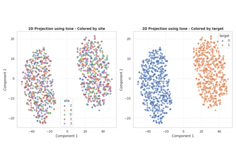
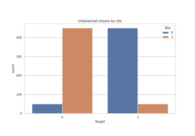
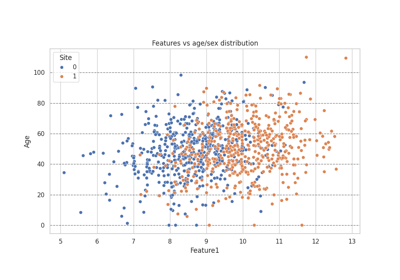
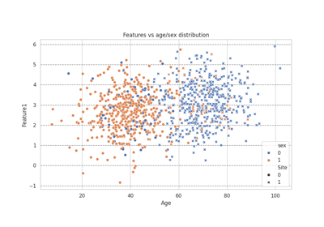
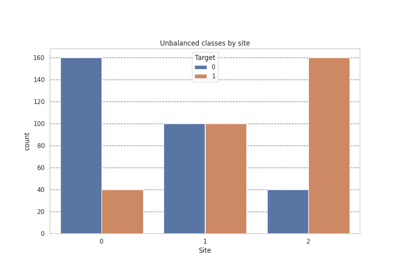

make_multisite_classification#
- uniharmony.datasets.make_multisite_classification(n_sites: int = 2, n_samples: int | list[int] = 1000, n_features: int = 10, n_classes: int = 2, balance_per_site: list[float] | list[list[float]] | None = None, signal_type: str = 'linear', signal_strength: float = 1.0, noise_strength: list[float] | float = 0.1, site_effect_type: str = 'location', site_effect_strength: list[float] | float = 3.0, site_effect_homogeneous: bool = True, covariates: None = None, return_base_data: Literal[False] = False, random_state: int | RandomState = 42, **kwargs) tuple[ndarray, ndarray, ndarray]#
- uniharmony.datasets.make_multisite_classification(n_sites: int = 2, n_samples: int | list[int] = 1000, n_features: int = 10, n_classes: int = 2, balance_per_site: list[float] | list[list[float]] | None = None, signal_type: str = 'linear', signal_strength: float = 1.0, noise_strength: list[float] | float = 0.1, site_effect_type: str = 'location', site_effect_strength: list[float] | float = 3.0, site_effect_homogeneous: bool = True, *, covariates: list, return_base_data: Literal[False] = False, random_state: int | RandomState = 42, **kwargs) tuple[ndarray, ndarray, ndarray, dict[str, ndarray]]
- uniharmony.datasets.make_multisite_classification(n_sites: int = 2, n_samples: int | list[int] = 1000, n_features: int = 10, n_classes: int = 2, balance_per_site: list[float] | list[list[float]] | None = None, signal_type: str = 'linear', signal_strength: float = 1.0, noise_strength: list[float] | float = 0.1, site_effect_type: str = 'location', site_effect_strength: list[float] | float = 3.0, site_effect_homogeneous: bool = True, *, covariates: None = None, return_base_data: Literal[True], random_state: int | RandomState = 42, **kwargs) tuple[ndarray, ndarray, ndarray, ndarray]
- uniharmony.datasets.make_multisite_classification(n_sites: int = 2, n_samples: int | list[int] = 1000, n_features: int = 10, n_classes: int = 2, balance_per_site: list[float] | list[list[float]] | None = None, signal_type: str = 'linear', signal_strength: float = 1.0, noise_strength: list[float] | float = 0.1, site_effect_type: str = 'location', site_effect_strength: list[float] | float = 3.0, site_effect_homogeneous: bool = True, *, covariates: list, return_base_data: Literal[True], random_state: int | RandomState = 42, **kwargs) tuple[ndarray, ndarray, ndarray, dict[str, ndarray], ndarray]
Simulate multi-site data with signal, noise, and site effect components.
In the data generation process, first a ‘base’ problem is generated using sklearn functions, selected with “signal_type”. Then, each site is simulated and a site effect component is added to X, selected with “site_effect_type”. The strength of the ‘Effect of Site’ (EoS) is controlled by site_effect_strength. If a list is passed, which element corresponds to the site_effect_strength in each site. List len musts be equal to n_sites. If a single value is passed, all sites has the same EoS Finally a gaussian noise is added to each site, controlled by “noise_strength”.
Generates synthetic multi-centre biomedical data following the additive model:
X = Signal(y) + SiteEffect(site) + Noise(site)
Optionally generates covariates (age, sex, quality, or custom) that are correlated with the pre-site-effect feature matrix and vary by site.
The per-site pipeline is:
1. _make_base_data → X_base, y (signal only) 2. _make_covariates → covariates (from X_base, before EoS) 3. _apply_site_effect → X_site (with EoS) 4. _apply_noise → X_final (independent Gaussian noise)
- Parameters:
- n_sitesint, optional (default 2)
Number of sites to simulate.
- n_samplesint or list[int], optional (default 1000)
If an int is provided, total number of samples across all sites. If a list is provided, N for each site, must have the same len as n_sites.
- n_featuresint, optional (default 10)
Number of features per sample.
- n_classesint, optional (default 2)
Number of classes to simulate (2 for binary, >2 for multi-class).
- balance_per_sitelist of float, list of list of float or None, optional (default None)
Class balance for each site. If None, uses balanced classes (0.5 for binary, equal distribution for multi-class). A flat list applies to every site; a list-of-lists gives one weight vector per site. Weights must sum to 1 (a warning is issued and sklearn normalizes automatically if not).
None= balanced classes.- signal_typestr, optional (default “linear”)
Which type of signal to generate the base problem. One of
"linear","moons","circles","blobs","gaussian_quantiles". Note:"moons"and"circles"always produce 2 features regardless ofn_features.- signal_strengthlist of float or float, optional (default 1.0)
Strength of the signal component separating classes. Passed as ‘class_sep` to ``sklearn.datasets.make_classification`.
- noise_strengthlist of float or float, optional (default 0.1)
Strength of the noise component by site. If one component is passed, all sites has the same noise_strength.
- site_effect_typestr, optional (default “location”)
Type of site effect to add to the original data. Options: “location”, “scale”, “location+scale”, “variance”, “nonlinear”, “dropout”.
- site_effect_strengthfloat, optional (default 3.0)
Strength of site-specific effects.
- site_effect_homogeneousbool, optional (default True)
Whether the site effect is homogeneous (same for all samples in a site).
- covariateslist[Covariate | str] | None, default None
Covariate specifications. Each entry is a
Covariateinstance or a preset name string ("age","sex","quality"). WhenNone, no covariates are generated and the function returns a 3-tuple.- return_base_databool, default False
Return base data before applying any change. This represents the ground Truth.
- random_stateint or RandomState instance, (default 42)
The seed of the pseudo random number generator or RandomState for reproducibility.
- kwargsdict
Additional keyword arguments passed to
sklearn.datasets.make_classification.
- Returns:
- Xnp.ndarray of shape (n_samples, n_features)
Simulated feature matrix
- ynp.ndarray of shape (n_samples,)
Class labels (0 to n_classes-1)
- sitesnp.ndarray of shape (n_samples,)
Site labels (0 to
n_sites-1)- covariates_dictdict[str, np.ndarray]
Only returned when
covariatesis notNone. Maps covariate name to array of shape (n_samples_total,).- X_basenp.ndarray of shape (n_samples, n_features)
Only returned when
return_base_datais notTrueSimulated base samples (without EoS or noise)
Examples
>>> X, y, sites = make_multisite_classification( ... n_sites=3, n_samples=300, n_features=20, n_classes=3 ... ) >>> X.shape, y.shape, sites.shape ((300, 20), (300,), (300,))
Examples#



Explore EoS with dimensionality reduction techniques


Analyzing NeuroComBat behavior with imbalance across sites

Analyzing ComBatGAM behavior with imbalance across sites

Analyzing ComBatGAM behavior with imbalance across sites
NeuroComBat effect in features


Multisite Harmonization using Inter-Site Matched Interpolation (ISMI)


Using Inter-Site Matched Interpolation (ISMI) with matching covariates